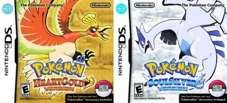

Cuarta generación
Revolución en DS
La cuarta generación de la franquicia comienza con los títulos Pokémon Perla y Pokémon Diamante, lanzados el 28 de septiembre de 2006 en Japón, el de abril de 2007 en norteamérica, el 21 de junio en Australia, el 27 de julio de 2007 en Europa, y el 4 de febrero de 2008 llegaron a Corea del Sur. Estos títulos fueron lanzados para la Nintendo DS.
Estos videojuegos cuentan con remakes de octava generación, Pokémon Diamante Brillante y Pokémon Perla Reluciente.
Una tercera versión con diferencias en la historia y mejoras, Pokémon Platino, fue publicada el 13 de septiembre de 2008 en Japón, y en 2009 en el resto del mundo. Alcanó gran éxito en su lanzamiento.

Esta generación también contiene los remakes de los juegos de segunda generación, Pokémon HeartGold y Pokémon SoulSilver, lanzados en 2009.
Todas las entregas principales de esta generación son ampliamente populares y tuvieron éxito en una consola tan vendida como la Nintendo DS, siendo Pokémon Platino el título con menos ventas de ellos, con alrededor de 7 millones de ventas en el top 13 de la plataforma, mientras que Pokémon Diamante y Pokémon Perla ocupan el top 5 con 17 millones, y Pokémon HeartGold y Pokémon SoulSilver ocupan el top 8 con casi 13 millones.
En la serie de animación, la cuarta generación abarca desde la décima hasta la decimotercera, llegando al capítulo 660. Se incluyen también la octava, novena, décima, undécima, duodécima y decimotercera películas.
Novedades
Las novedades de la cuarta generación son las siguientes:
- 107 nuevas criaturas, llegando a la cifra de 493 Pokémon en la franquicia. Estas adiciones incluyen un gran número de Pokémon legendarios y singulares, con 9 y 5 respectivamente, y muchas evoluciones nuevas para líneas evolutivas ya existentes de primera o segunda generación, con un menor número de preevoluciones.
Los Pokémon legendarios de estas ediciones son Dialga (Pokémon Diamante) y Palkia (Pokémon Perla)
Starters de Sinnoh Turtwig
Chimchar
Piplup
- La región en la que se ambientan los juegos principales es Sinnoh, que se basa en la isla japonesa de Hokkaido.
Mapa de Sinnoh - Un nuevo equipo de villanos, el Equipo Galaxia.
- Adición de nuevos objetos, como las deportivas para avanzar más deprisa, o las bayas, con diversos usos, y la MO buceo para explorar debajo del agua.
- Introducción del GTS, el centro de intercambio global, lugar en el que se pueden intercambiar Pokémon con personas de todo el mundo por Wi-Fi.
- Sin llegar a ser un 3D total, el estilo gráfico abandona los sprites puros para mezclar los sprites 2D con algunos modelos 3D en el mundo, como algunos edicios y estructuras.
- Los Pokémon reciben un total de 113 nuevos movimientos y 47 nuevas habilidades.
- Regresa el ciclo de día/noche de la segunda generación.
- Ampliación de otros aspectos, como nuevas MOs (treparrocas, despejar) o nuevas formas de evolución (nivel en un lugar determinado, tener un ataque específico, compañía de otro Pokémon en el equipo o subir de nivel con un objeto equipado).
Gameplay de Pokémon Perla
La versión de Pokémon Platino tiene algunas diferencias y características únicas. Algunas de las más importantes:
- Animación a los sprites de los Pokémon de espaldas, también incluyendo animaciones para los entrenadores.
- Inclusión de la Cámara Lucha, objeto que permite grabar combates como los del Frente de Batalla.
- Capacidad de capturar legendarios de otros juegos fuera de eventos.
Historia
La historia de estos juegos comienza en Pueblo Hojaverde, donde el protagonista ve un documental de un Gyarados rojo avistado en un lago (referencia al famoso Gyarados shiny de Pokémon Oro y Pokémon Plata). Junto a su mejor amigo van al lago local, donde encuentran al Profesor Serbal y su asistente(Leon o Maya según la elección de personaje del jugador). Cuando se van, el protagonista y su amigo son atacados por Starlys salvajes, y se defienden gracias a los Pokémon que había en un maletín que se dejó el profesor. Así, el Pokémon elegido será el inicial de la aventura.
De nuevo, el objetivo del juego es reunir las ocho medallas de los gimnasios para convertirse en maestro Pokémon. Durante la aventura veremos al Equipo Galaxia, que trata de controlar los tres lagos de la región para atrapar a los tres Pokémon míticos. Más adelante lo logran, y esto les permite obtener un objeto para controlar al Pokémon legendario, Dialga o Palkia según la versión.
El líder del grupo consigue invocar al legendario en unas antiguas ruinas, y su poder causa estragos en la región. Los Pokémon míticos tratan de detenerlo, y tras enfrentarse a él la región recupera la normalidad.
Para terminar la historia, tras reunir las medallas y vencer al Alto Mando podremos enfrentarnos a Cintia, la campeona de la liga, para convertirnos en los maestros.
En Pokémon Platino la historia presenta una pequeña variación, girando en torno al legendario Pokémon Giratina, habitante del Mundo Distorsión.
Otros juegos
La cuarta generación cuenta con importantes títulos spin-off que continúan subsagas ya iniciadas, así como los remakes de segunda generación:
- Pokémon HeartGold y Pokémon SoulSilver

Pokémon HeartGold y Pokémon SoulSilver son los remakes de los videojuegos de segunda generación, Pokémon Oro y Pokémon Plata. Se lanzaron el 12 de septiembre de 2009 en Japón, el 14 de marzo de 2010 en América, el 25 de marzo de 2010 en Australia y el 26 de marzo de 2010 en Europa.
La historia se mantiene fiel a los originales, con cambios y novedades importantes en el juego, principalmente rediseños en aspectos como la Pokédex, el PokéGear, otros aspectos visuales, además de la renovación general de gráficos. También están disponibles las capturas de los pájaros legendarios y Mewtwo, cosas que no se podían hacer en los juegos originales.
Otras de las novedades son la posibilidad de que un Pokémon de tu equipo te siga por el mapa, pudiendo interactuar con él; el Pokéathlon, que es una serie de minijuegos, o el PokéWalker
- Pokémon Mundo misterioso: Exploradores del tiempo y Exploradores de la oscuridad
Estos títulos son las segundas entregas de la subsaga Mundo misterioso, enfocada en la exploración de mazmorras. Ambos títulos son para la plataforma Nintendo DS, lanzados el 13 de septiembre de 2007 en Japón y en 2008 en el resto del mundo.
De nuevo, nuestro Pokémon se determina por un test de personalidad inicial, y podemos elegir un compañero de distinto tipo después. La historia también se basa en un humano transformado en Pokémon y un mundo cada vez más caótico.
Tras despertar en una playa, ayudamos a nuestro compañero a recuperar un objeto robado e¡por un equipo malvado, una especie de talismán. Juntos, se dirigen al PokéGremio para alistarse como equipo de exploradores.
Durante el juego, nuestro Pokémon tiene algunas premoniciones y visiones, y se ve que un Pokémon está intentando robar los engranajes del tiempo para sumir el mundo en la oscuridad. Este termina siendo Grovyle, y Dusknoir logra devolver los engranajes y llevar a Grovyle al futuro, pero también se lleva al protagonista. Allí, se descubre que Dusknoir es malvado y que Grovyle viajó al pasado con un compañero humano para evitar la catástrofe en la que está sumida el mundo del futuro, dicho compañero es nuestro Pokémon.
Conseguimos restaurar el tiempo al volver al presente y después Grovyle se sacrifica para llevar a Dusknoir al futuro de nuevo. Mientras, el protagonista y su compañero derrotan a Dialga para liberar el mundo de su parálisis, y tras esto, hemos cumplido nuestra misión y nos desvanecemos. Dialga, viendo la tristeza de nuestro compañero por ello, restablece la línea temporal para que se reunan de nuevo.
Existe una tercera versión, Pokémon Mundo misterioso: Exploradores del cielo, una reedición de los anteriores que sigue la misma historia con mejoras y añadidos con capítulos nuevos de historias separadas. Fue lanzado a finales de 2009.
- Pokémon Ranger: Sombras de Almia
Pokémon Ranger: Sombras de Almia es la segunda entrega de la subsaga Ranger, un RPG de acción publicado en la Nintendo DS el 20 de marzo de 2008 en Japón, y en noviembre del mismo año en el resto del mundo.
En la historia controlaremos a Primo o Caty. Somos alumnos de la escuela Ranger en la región de Almia, junto a nuestros amigos Ritmi y Silvio, nuestro objetivo es detener al Equipo Pocalux.
El sistema de juego se mantiene respecto al anterior, con 270 Pokémon y adiciones como los recados, nuevas formas de moverse o nuevos iniciales
- Pokémon Ranger: Trazos de luz
Pokémon Ranger: Trazos de luz es la tercera y última entrega de la subsaga Ranger, publicada en Nintendo DS el 6 de marzo de 2010 en Japón, y en octubre y noviembre en el resto del mundo.
Se ubica en una nueva región, Oblivia, donde debemos detener al equipo Pokémon Nappers, y además de nuestro amigo tendremos como acompañante a un Pichu con ukelele. Otra de las novedades incluye la posibilidad de montar en Pokémon como los perros legendarios, o sobre Latios y Latias, con los que podemos volar.
- Pokémon Battle Revolution
Pokémon Battle Revolution es el primer videojuego de la franquicia lanzado en la consola Wii, publicado el 14 de diciembre de 2006 en Japón, y en 2007 en el resto del mundo.
Se centra en los combates de estadio con un estilo artístico en 3D, volviendo al enfoque original de Pokémon Stadium. Se desarrolla en una isla llamada PokéTopia, donde los entrenadores participan en coliseos. El modo principal es el modo coliseo, que tiene varios apartados, entre ellos el desafío, con torneos con diferentes reglas, o pudiendo crear nuestras propias reglas en batalla libre. Cada vez que superamos un coliseo obtenemos Pokévales, con los que podemos comprar vestuario o regalos misteriosos.
- PokéPark Wii: La gran aventura de Pikachu
PokéPark Wii: La gran aventura de Pikachu es un videojuego de aventura publicado para Wii el 5 de diciembre de 2009 en Japón, y en 2010 en el resto del mundo.
En su historia, Pikachu se encuentra jugando con sus amigos Piplup, Charmander y Chikorita. Aparece Mew y abre un portal donde se caen y separan. Allí, Mew le dice a Pikachu que hay una crisis en el PokéPark, y debe encontrar fragmentos del Prisma Celeste para que sus residentes se lleven bien. Pikachu se dirige al PokéPark, donde debe superar megarretos frente a guardiantes con la ayuda de varios Pokémon para recuperar los fragmentos. También se puede jugar a algunos minijuegos, o tomar fotografías, como en Pokémon Snap.
- Otros títulos secundarios de la cuarta generación son Pokémon Rumble, My Pokémon Ranch, Pokémon Mystery Dungeon: Adventure Squad o Pokémon Tsuri Taikai DS, estos dos últimos solo presentes en Japón.